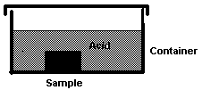
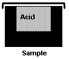

Ellen Domb, Ph.D.
The PQR Group, 190 N. Mountain Ave., Upland, CA 91786 USA
(909)949-0857 FAX (909)949-2968 ellendomb@compuserve.com
All of the methods of teaching TRIZ, whether software-assisted, classical, or enhanced by the various teachers now practicing, emphasize the importance of solving the "right" problem; that is, don't put your creative and analytic energy into applying TRIZ to curing only the symptoms of the problem, find the problem drivers and either remove them or modify them to prevent the problem from recurring.
Many of the techniques of ARIZ evolved to help problem solvers find the right problem to solve, at the same time that Juran, Deming, and other founders of the quality improvement movement were introducing people to the idea that they must search for the "root cause" of a quality deficiency, and not consider the problem solved if only the symptoms were treated. Other techniques (such as the Innovative Situation Questionnaire-see book review in this issue) were also developed for the same purpose-to clarify exactly what part of what systems must be improved.
ARIZ now has over 100 steps (in some versions) and may be more than you need to understand the Zones of Conflict for your problem well enough to apply the principles of TRIZ.
There are 2 "zones" of conflict in a problem: spatial and temporal (sometimes called the zone of operation and the time of operation.) That is, you need to know exactly where the conflict arises, and exactly when. Conflict is basic to the definition of a technical problem in TRIZ. Identifying the zones of conflict can help you distinguish what kind of conflict your problem has, which will lead you to an appropriate solution.
There are physical and technical conflicts. (Vocabulary note for TRIZ newcomers: these are labels based on early translations. "Technical" contradictions or conflicts are not more technical than physical conflicts.)
An easy way to get started on analysis of the zones of conflict is the journalism technique. Answer the 6 basic questions of journalism:
This list is frequently called "5W's and an H" as a mnemonic. In the course of expanding on the questions, you will frequently find the detailed definitions of the zones of conflict, and the explicit definition of the contradiction. Expand the questions as follows:
Let's try this for one of the classical teaching problems in TRIZ: The acid bath. In this problem, researchers want to test how acid etches various samples of metals. But, the acid also etches the coating lining the container the samples are placed in, and the coatings on the walls of the container have to be replaced frequently.

By the time you have finished answering the 5W's and H, the contradiction is very clear. It is a physical contradiction:
The resources internal to the problem are the container, the lining, the acid, and the samples. The problem is resolved by forming the container from the sample material. This simplifies the problem (no container, no linings.) and increases the productivity and the accuracy of the measurement work.
 Note that if the problem solvers had rushed ahead without completing the questions, they might have spent all their time trying to find a more efficient way to re-coat the inside of the container, or a more resistant material, rather than finding a solution that eliminates the problem.
Identifying the zones of conflict before applying the tools of TRIZ will help you understand the conflict better, will simplify your problem solving, and may lead you directly to a solution.
References:
Ellen Domb and Karen Tate: Practical Innovation: Using TRIZ to Accelerate Product Development. Seminar notes, 1996-7. Ellendomb@compuserve.com
G. S. Altshuller. Creativity as an Exact Science. (See Products and Services)
See this month's book reviews for additional references.